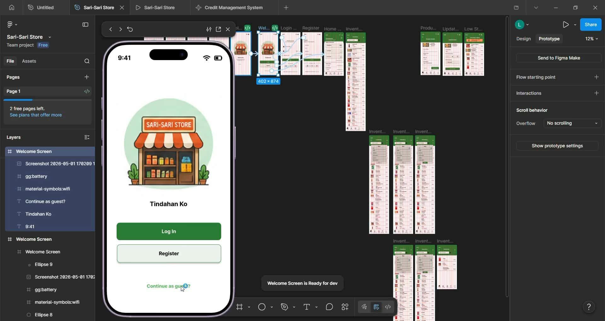
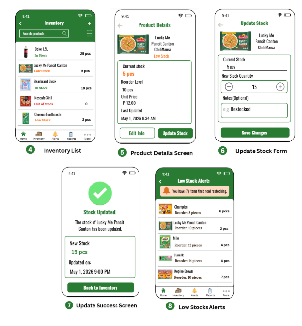

← Back to Projects
← Back to Projects
← Back to Projects
← Back to Projects
HCI FINAL PROJECT
A cozy café logo concept that represents warmth, creativity, and the welcoming atmosphere of Brew Haven.
Stockzen is a proposed digital inventory management solution designed to help sari-sari store owners organize and monitor their inventory. The project aims to provide a more convenient way of managing product records, tracking stock availability, and monitoring inventory levels through a centralized digital platform.
Here is the screenshot of the prototype created in Figma.

I used Figma to create and develop the Stockzen prototype. Through the software, I arranged the visual elements, refined the interface design, and enhanced the overall user experience to achieve a functional and user-friendly inventory management solution.

Some features of the Stockzen prototype include a user-friendly interface, organized product records, stock monitoring, and notifications for low-stock, out-of-stock, and expiring products.
For this project, I developed the concept of Stockzen, an integrated digital inventory solution intended for small sari-sari stores. The system is designed to simplify inventory management by providing organized product records, stock monitoring, and notifications for low-stock, out-of-stock, and expiring products. The project focuses on creating a user-friendly and accessible interface that allows store owners to manage their inventory more efficiently. Through this concept, I explored how technology and thoughtful interface design can help improve the daily operations of small businesses.